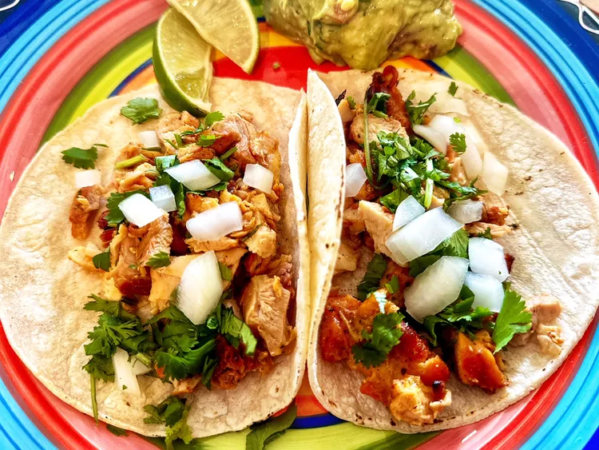

Easy Chicken Street Tacos

Description
An easy-to-make chicken street taco recipe as detailed by Yolanda Guitierrez on Allrecipes!
The chicken is seasoned with cilantro and onions and is served with guacamole, salsa, and fresh lime wedges.
This recipe yields 8 tacos so make sure to adjust the ingredients based on your expected serving size.
It will only take about 10 minutes of prep time and 8 minutes of cook time. So easy!
Ingredients
- 1 pound pollo para asar (seasoned, boneless, skinless chicken)
- 1 onion, diced
- 1/2 cup chopped cilantro
- 8 corn tortillas
Directions
- Preheat an outdoor grill for medium-high heat and lightly oil the grate.
- Grill chicken, turning occasionally, until juices run clear and chicken is no longer pink at the center, about 7 minutes. An instant-read thermometer, inserted near the center, should read at least 165 degrees F (74 degrees C).
- Heat corn tortillas until soft and pliable in the microwave, about 1 minute. Top with chicken, onions, and cilantro.